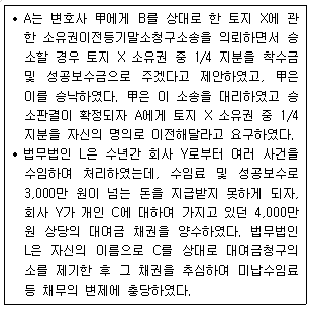
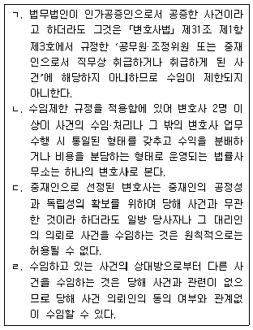
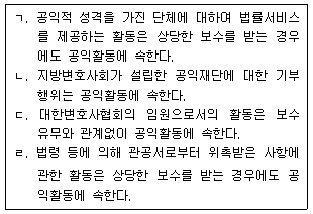

법조윤리 (2016-08-06 기출문제)
1과목: 임의 구분
1. 변호사의 윤리에 관한 설명 중 옳은 것은?
- A와 B는 건물철거소송의 원고와 피고이며, 변호사 甲은 B로부터 이 사건을 수임하였다. A는 B가 식당 영업을 하고 있는 위 철거청구 대상 건물에 찾아와 두세 차례 건물 철거를 요구한 적이 있다. 변호사 甲은 A의 행위가 업무방해죄에 해당할 여지가 희박하더라도 민사사건과 형사사건은 별개이므로 고소할 것을 종용하는 것이 타당하다.
- 국선변호인이 선임된 뒤 의뢰인의 요청에 의해 국선변호인을 사선으로 전환하는 경우에는 종전에 소송위임장과 변호사선임신고서 등을 이미 제출하였다면 별도로 이를 제출할 필요는 없다.
- 변호사는 상대방 당사자에게 법정대리인이 있는 경우에 원활한 분쟁해결을 위하여 상대방 당사자와 직접 접촉하거나 교섭하는 것이 좋다.
- 변호사는 노약자, 장애인, 빈곤한 자, 무의탁자, 외국인, 소수자라는 이유만으로 수임을 거절하여서는 아니 된다.
(정답률: 알수없음)

2. 「변호사법」상 법조윤리협의회의 업무에 관한 설명 중 옳지 않은 것은?
- 공직퇴임변호사는 퇴직일부터 3년 동안 수임한 사건에 관한 수임 자료와 처리 결과를 소속 지방변호사회에 제출하여야 하고, 지방변호사회는 제출받은 자료를 법조윤리협의회에 제출하여야 한다.
- 일정 직급 이상의 직위에 재직했던 변호사가 아닌 퇴직공직자가 법무법인에 취업한 때에는 법무법인은 매년 1월 말까지 업무활동내역 등이 포함된 전년도 업무내역서를 작성하여 법무법인의 주사무소를 관할하는 지방변호사회에 제출하고, 그 지방변호사회는 제출받은 자료를 법조윤리협의회에 제출하여야 한다.
- 법조윤리협의회의 위원·간사·사무직원 또는 그 직에 있었던 자는 업무처리 중 알게 된 비밀을 누설하여서는 아니 된다.
- 법조윤리협의회의 위원장은 제출받은 자료를 점검한 결과 공직퇴임변호사에게 징계사유나 위법의 혐의가 있는 것을 발견하였을 때에는 대한변호사협회의 장에게 징계개시를 신청하거나 지방검찰청 검사장에게 수사를 의뢰할 수 있다.
(정답률: 알수없음)
3. 변호사 甲은 법무법인 L의 대표변호사인 乙로부터 구성원 변호사로 참여해달라는 제안을 받았다. 甲은 서울 강남구에, 법무법인 L은 서울 서초구에 사무소를 두고 있다. 법무법인 L에는 구성원 변호사로 乙, 丙, 丁 세 사람이 있고, 소속변호사로 戊, 己 두 사람이 있다. 이에 관한 설명 중 옳지 않은 것은?
- 甲이 乙의 제안에는 응하되 기존의 자기 사무소 위치로 인한 이익을 포기하고 싶지 않다면, 기존의 사무소 위치에 법무법인 L의 분사무소를 설치할 수는 있으나, 그 분사무소에 甲, 乙, 丙, 丁 중 누구도 없이 戊나 己만 주재하는 것으로는 할 수 없다.
- 甲이 구성원 변호사가 된 후에는, 구성원 변호사가 되기 전부터 법무법인 L이 제3자에 대하여 부담하고 있던 일반 채무에 대하여도 법무법인 L의 재산으로 변제할 수 없을 때, 甲은 다른 구성원 변호사들과 연대하여 책임을 져야 한다.
- 甲이 구성원 변호사가 된 후, 甲으로서는 선임여부조차 알지 못했던 사건에서 담당변호사로 지정된 丁과 戊의 업무상 과오로 법무법인 L이 의뢰인에게 손해배상책임을 지게 되었다면, 甲은 丁과 戊의 재산으로 그 채무를 완제할 수 없거나 강제집행이 주효하지 않을 경우에만 다른 구성원 변호사들과 연대하여 책임을 진다.
- 甲은 구성원 변호사가 된 후, 설령 甲의 탈퇴로 인하여 법무법인 L이 구성원의 요건을 갖추지 못하게 되고 보충조차 불가능한 상황에 빠진다고 하더라도, 어떠한 제약도 없이 임의로 탈퇴할 수 있다.
(정답률: 알수없음)
4. 변호사 甲은 의뢰인으로부터 관리를 위탁받은 부동산을 임의로 처분하여 도박에 탕진하였고, 이로 인하여 횡령 혐의로 기소되어 징역 2년에 집행유예 3년의 형을 선고받아 확정되었다. 이에 관한 설명 중 옳은 것은?
- 甲은 그 집행유예 기간이 끝나면 대한변호사협회에 재등록을 신청할 수 있다.
- 甲이 다시 의뢰인으로부터 관리를 위탁받은 금원을 횡령하여 집행유예 이상의 형이 확정되면 영구제명의 대상이 된다.
- 대한변호사협회의 등록 취소가 결정된 후, 甲은 집행유예 기간 중 사건을 수임할 수는 없으나 법무법인 구성원 지위는 유지할 수 있다.
- 甲은 형이 확정되면 당연히 변호사의 자격을 상실하므로 대한변호사협회의 장은 등록심사위원회의 의결이 있기 전이라도 신속히 그 등록을 취소하여야 한다.
(정답률: 알수없음)
5. 다음 중 변호사의 상인성을 부정하는 근거가 아닌 것은? (다툼이 있는 경우 판례에 의함)
- 성공보수금의 지급채무는 영업에 관한 채무가 아니다.
- 「변호사법」에서는 변호사의 직무에 관하여 고도의 공공성과 윤리성을 강조하고 있다.
- 「소득세법」에서는 변호사의 직무수행으로 발생한 수익을 사업서비스업에서 발생하는 소득으로 보아 과세대상으로 삼고 있다.
- 「변호사법」에서는 법무법인의 설립등기시 ‘상호’가 아닌 ‘명칭’을 등기하도록 하고 있다.
(정답률: 알수없음)
6. 「변호사법」상 업무정지에 관한 설명 중 옳은 것은?
- 법무부장관은 변호사가 과실범으로 공소제기된 경우에도 의뢰인이나 공공의 이익을 해칠 구체적인 위험성이 있는 때에는 법무부징계위원회에 그 변호사의 업무정지에 관한 결정을 청구할 수 있다.
- 법무부장관은 변호사가 「변호사법」에 따라 징계 절차가 개시되어 그 징계 결정의 결과 영구제명에 이르게 될 가능성이 매우 크다는 이유만으로도 법무부징계위원회에 그 변호사의 업무정지에 관한 결정을 청구할 수 있다.
- 법무부징계위원회는 법무부장관의 청구를 받은 날부터 14일 이내에 해당 변호사에 대하여 업무정지에 관한 결정을 하여야 한다.
- 업무정지명령을 받은 변호사가 공소제기된 해당 형사사건과 같은 행위로 징계개시가 청구되어 정직결정을 받으면 업무정지 기간은 그 전부 또는 일부를 정직 기간에 산입한다.
(정답률: 알수없음)
7. 다음 중 변호사에 대한 징계사유가 될 수 없는 것은?
- 변호사시험에 합격한 변호사가 6개월 이상 법률사무종사기관에서 법률사무에 종사하거나 대한변호사협회 연수를 마치지 아니하고 다른 변호사 명의를 빌려 사건을 수임한 경우
- 검사 출신 변호사가 퇴직 6개월 전 근무했던 검찰청에 대응하는 법원에서 진행 중인 민사사건을 퇴직 3개월 후 수임한 경우
- 변호사가 불특정한 다수인에게 문자 메시지를 보내는 방법으로 광고를 한 경우
- 변호사가 ｢변호사전문분야등록에관한규정｣에 따라 금융법을 전문분야로 등록한 후 명함에 ‘금융법 전문변호사’라고 표시한 경우
(정답률: 알수없음)
8. 甲은 미국 뉴욕주 변호사 자격을 취득한 후 뉴욕에서 ‘Liberty Law Firm’ 이라는 명칭으로 사무실을 운영하던 중 대한민국 법무부장관으로부터 자격승인을 받고 대한변호사협회에 외국법자문사로 등록하였다. 甲이 대한민국에서 ‘리버티 외국법자문법률사무소’를 개설·운영하려고 할 때, 이에 관한 설명 중 옳지 않은 것은?
- 甲이 외국법자문법률사무소의 대표자가 되려면 미국변호사의 자격을 취득한 후 미국에서 3년 이상의 기간을 포함하여 총 5년 이상 법률사무를 수행한 경력이 있어야 한다.
- ‘리버티 외국법자문법률사무소’는 미국 뉴욕의 본점사무소가 국내에 대표사무소 형태로 설립한 것이므로 甲은 국내에 그 외국법자문법률사무소의 분사무소를 둘 수 있다.
- 외국법자문법률사무소는 국내 법무법인과 사건을 공동으로 처리하고 그로 인한 보수나 수익을 분배할 수 없으나, 「외국법자문사법」상 공동사건처리등을 위한 등록을 한 때에는 일정한 경우 수익을 분배할 수 있다.
- 甲이 외국법자문사로서의 품위를 손상하는 행위를 한 경우, 대한변호사협회의 장이 甲에 대하여 대한변호사협회 외국법자문사징계위원회에 징계개시를 청구하여야 한다.
(정답률: 알수없음)
9. 변호사와 의뢰인의 관계에 대한 설명 중 옳지 않은 것은?
- 변호사가 예상 의뢰인과 접촉하는 행위는 변호사로서의 명예와 품위에 어긋난다.
- 변호사는 의뢰인이 기대하는 결과를 얻을 가능성이 없거나 희박한 사건을 그 가능성이 높은 것처럼 설명하거나 장담하지 아니한다.
- 변호사는 상대방 또는 상대방 대리인과 친족관계 등 특수한 관계가 있을 때에는 이를 미리 의뢰인에게 알린다.
- 변호사는 사건처리의 방법이 현저하게 부당한 경우에는 당해 사건을 수임하지 아니한다.
(정답률: 알수없음)
10. 변호사의 사건 수임 및 처리에 관한 설명 중 옳지 않은 것은?
- 변호사는 위임의 목적이 현저하게 부당한 경우에는 당해 사건을 수임하지 아니한다.
- 변호사는 사건의 내용이 사회 일반으로부터 비난을 받는다는 이유만으로 수임을 거절하지 아니한다.
- 변호사는 의뢰인의 요청이 있으면 비록 의뢰인의 이익에 배치되더라도 반드시 이에 따라야 한다.
- 국선변호인으로 선임된 변호사는 그 사건을 사선으로 전환하기 위하여 부당하게 교섭하지 아니한다.
(정답률: 알수없음)
11. 변호사 甲은 사기사건의 피해자 A로부터 위임을 받아 변호사 乙을 소송대리인으로 선임한 가해자 B를 상대로 손해배상청구소송을 진행하고 있다. 합의에 의한 사건해결을 바라는 A는 甲에게 “乙보다는 B가 합의에 더 적극적이니 직접 B를 접촉하여 적절한 합의를 도출해 달라. 그것이 잘 안되면 나도 B를 만나 직접 협상해 보겠다.”라고 한다. 甲이나 A가 乙의 동의 없이 직접 B와 접촉할 수 있는가?
- 甲이나 A가 직접 B와 접촉하는 것은 모두 허용된다. 합리적인 금액에 따른 합의는 A와 B 모두에게 이익이 되고, 乙에게도 손해가 되지 않기 때문이다.
- 甲이나 A가 직접 B와 접촉하는 것은 모두 허용되지 않는다. 당사자나 그의 소송대리인은 상대방 당사자에게 소송대리인이 있는 경우, 원칙적으로 상대방 당사자 본인과 직접 접촉하거나 교섭해서는 안 되기 때문이다.
- 甲이 B와 접촉하는 것은 가능하지만 A가 B와 접촉하는 것은 허용되지 않는다. 당사자가 변호사에게 소송수행을 위임한 이상 직접 상대방 당사자를 접촉하는 것은 허용되지 않기 때문이다.
- 甲이 B와 접촉하는 것은 안 되지만 A가 B와 접촉하는 것은 허용된다. 변호사는 상대방 당사자 본인과 직접 접촉하는 것이 원칙적으로 금지되어 있지만 당사자 본인에게는 그러한 제한이 없기 때문이다.
(정답률: 알수없음)
12. 변호사의 의뢰인에 대한 윤리에 관한 설명 중 옳지 않은 것은? (다툼이 있는 경우 판례에 의함)
- 변호사는 의뢰인의 구체적인 수권 없이 소취하, 화해, 조정 등 사건을 종결시키는 소송행위를 하여서는 아니 된다.
- 변호사는 형사사건의 피고인인 의뢰인에게 자기 사건에 대한 증거인멸행위는 범죄가 되지 않는다고 법률적인 조언을 해줄 수 있다.
- 변호사는 그 지위를 부당하게 이용하는 것이 아닌 한 의뢰인과 금전거래를 할 수 있다.
- 변호사는 ｢변호사법｣이 정하는 바에 따라서 진실의무가 인정되는 것이므로, 변호사가 신체구속을 당한 사람에게 헌법상 권리인 진술거부권이 있음을 알려 주고 그 행사를 권고하는 것은 변호사로서의 진실의무에 위배되는 것이다.
(정답률: 알수없음)
13. 변호사와 의뢰인의 관계에 관한 설명 중 옳은 것은? (다툼이 있는 경우 판례에 의함)
- 피고인으로부터 변호인 선임권을 위임받은 자는 피고인을 대리하여 변호인을 선임할 수 있다.
- 단순한 법률자문의 경우에도 수임할 사건의 보수를 명확히 정하여 서면으로 수임계약을 체결하여야 한다.
- 가압류사건을 수임한 변호사의 소송대리권은 그 가압류신청사건에 관한 소송행위뿐만 아니라 본안의 제소명령을 신청하거나, 상대방의 신청으로 발하여진 제소명령결정을 송달 받을 권한에까지 미친다.
- 변호사는 수사기관에 변호인선임서를 제출하지 아니하여도 내사 단계에 있는 사건에 대하여 변호하거나 대리할 수 있다.
(정답률: 알수없음)
14. 변호사 甲은 의뢰인 A로부터 착수금을 받고 대여금청구사건을 수임하였다. 소송 진행 중 A는 대여사실 입증을 위해 허위의 증언을 할 B를 증인으로 내세울 것을 지속적으로 요구하였으나 甲은 이를 거절하고 사임하였다. 이후 A는 B를 증인으로 내세워 직접 소송을 진행하였지만 결국 패소하였다. 그러자 A는 甲에게 중도사임을 이유로 착수금의 반환을 요구하였고, 甲은 A의 귀책사유로 사임하는 경우에는 착수금을 일체 반환하지 않기로 하는 특약을 이유로 착수금의 반환을 거절하였다. 이에 A는 甲을 상대로 착수금의 반환을 구하는 소를 제기하였는데, 이 소송에서 甲은 B의 위증과 관련된 사실을 공개할 수 있는가?
- 공개할 수 있다. 이미 위임계약은 종료되었고, 과거 의뢰인이었던 자의 비밀은 지킬 의무가 없기 때문이다.
- 공개할 수 있다. 그 사실을 공개하지 않고는 A의 귀책사유에 의한 사임임을 입증할 수 없기 때문이다.
- 공개할 수 없다. 변호사는 과거의 의뢰인이라도 보호할 의무가 있는데, 그 사실을 공개할 경우 A가 소송사기 미수와 위증교사로 처벌받을 우려가 있기 때문이다.
- 공개하여야 한다. 변호사는 사회정의의 실현을 사명으로 하며 진실의무가 있기 때문이다.
(정답률: 알수없음)
15. 변호사 甲은 의뢰인 A의 소개로 항소심 재판을 받고 있는 B의 사기사건을 수임하였다. 그런데 甲은 B의 변호인으로 활동하는 과정에서 B가 제1심 재판을 받음에 있어 A로부터 상당한 금전적 대가를 받기로 하고 자신이 이 사건 사기 범행을 저질렀다는 취지로 허위 자백하였음을 알게 되었다. 甲이 항소심 재판 과정에서도 적극적으로 B로 하여금 그 자백을 유지하게 하였다면, 이러한 甲의 변론활동은 정당한가? (다툼이 있는 경우 판례에 의함)
- 정당하다. 甲은 A에 대하여 성실의무를 부담하기 때문이다.
- 정당하다. 甲은 A와 B의 합의사실에 대하여 그 비밀을 유지할 의무가 있기 때문이다.
- 정당하지 않다. 甲은 항소심 재판 과정에서 A가 진범임을 밝혀야 할 적극적인 진실의무를 부담하기 때문이다.
- 정당하지 않다. 甲이 대변하여야 할 B의 이익은 법적으로 보호받을 가치가 있는 정당한 이익으로 제한되기 때문이다.
(정답률: 알수없음)
16. 변호사 甲의 행위 중 변호사 윤리에 위반되지 않는 것은?
- 甲은 소송 수행 중에 의뢰인으로부터 받은 증거자료를 사건이 종결된 후 3년까지 보관하였는데도 의뢰인이 돌려달라는 요구를 하지 아니하자 반환청구권의 소멸시효가 완성되었다는 이유로 고물상에 팔아버렸다.
- 甲은 소송 수행 중에 의뢰인으로부터 받은 동영상 파일을 혹시 모를 분실에 대비하여 자신의 컴퓨터에 복사해 놓았는데, 사건이 종결된 후 그 사실을 잊고서 컴퓨터를 중고상에 매각하였고, 중고상은 컴퓨터에 남아 있던 동영상 파일을 보게 되었다.
- 甲은 의뢰인의 동의를 받아 그가 맡긴 영문계약서를 외부번역사와 비밀준수약정을 체결한 후 번역을 의뢰하였다.
- 甲은 사건이 종결된 후 1년간 사건의 내용을 외부에 공개하지 않기로 하는 약정을 맺고서 사건을 수임하였다. 그 사건의 종결 후 어느 날 甲은 1년이 경과된 것으로 생각하고 기자에게 이 사건을 소개하였는데, 그 날은 1년에 하루가 모자란 날이었고, 기자는 다음날 그 사건을 공개하였다.
(정답률: 알수없음)
17. 변호사의 비밀유지의무에 관한 설명 중 옳지 않은 것은?
- 변호사의 비밀유지의무는 변호사가 반드시 지켜야 하는 의무이나 이를 위반한 경우 「변호사법」상 형사처벌의 대상은 아니다.
- 변호사는 의뢰인과 대립되는 상대방으로부터 사건의 수임을 위해 상담하였으나 수임에 이르지 아니하였을 경우, 상대방의 이익이 침해되지 않는다고 합리적으로 여겨지는 경우라면 수임할 수 있으나, 상대방에 대한 비밀유지의무가 침해되는 경우라면 그러하지 아니하다.
- 변호사가 의뢰인에 대한 비밀유지의무에서 벗어나려면 대한변호사협회에 폐업을 신청하여 스스로 등록을 말소하여야 한다.
- 비밀유지의무는 기본적으로 의뢰인에 대한 의무이지만 잠재적 의뢰인에 대하여도 적용된다.
(정답률: 알수없음)
18. 변호사의 수임제한에 관한 설명 중 옳지 않은 것은?
- 변호사는 위임사무가 종료된 이후에 종전 의뢰인이 양해한 경우라도 종전 사건과 기초가 된 분쟁의 실체가 동일한 사건에서 대립되는 당사자로부터 사건을 수임할 수 없다.
- 변호사는 상대방 또는 상대방 대리인과 친족관계에 있는 경우라도 의뢰인이 양해하는 경우에는 사건을 수임할 수 있다.
- 법무법인은 그 법무법인 소속의 특정 변호사가 사건의 수임 및 업무수행에 관여하지 않고 사건처리에 영향을 주지 아니할 것이라고 볼 수 있는 합리적인 사유가 있는 때에는 당해 변호사가 겸직하고 있는 당해 정부기관의 사건을 수임할 수 있다.
- 법무법인은 그 법무법인 소속의 특정 변호사가 사건의 수임 및 업무수행에 관여하지 않고 사건처리에 영향을 주지 아니할 것이라고 볼 수 있는 합리적인 사유가 있는 때에는 당해 변호사가 수임한 사건의 의뢰인의 양해 없이도 그 상대방이 위임하는 다른 사건을 수임할 수 있다.
(정답률: 알수없음)
19. 다음 각 사례에 관한 설명 중 옳지 않은 것은? (다툼이 있는 경우 판례에 의함)

- 「변호사법」에서 계쟁권리양수를 금지하는 것은 계쟁권리를 양수함으로 인하여 당사자와 변호사 사이의 신임관계에 균열을 초래하고 당사자와 이해 상반하는 결과를 가져오는 등 변호사의 일반적 품위를 손상시킬 염려가 있기 때문이다.
- 계쟁권리라 함은 계쟁 중에 있는 권리를 말하는데 甲과 A 사이에 토지 X 소유권 중 1/4 지분에 대한 양수약정 당시 토지 X에 대한 소유권은 A와 B 사이에 계쟁 중에 있었고, 이후 소송에서도 계쟁의 목적이 되는 권리였으므로 甲과 A 사이의 위 양수약정은 계쟁권리양수에 해당한다.
- 회사 Y의 대여금 채권은 계쟁 중에 있는 권리라고 할 수 없으므로 법무법인 L이 회사 Y로부터 대여금채권을 양수하는 것은 계쟁권리양수에 해당하지 않는다.
- 「변호사법」은 계쟁권리양수에 대하여 형사처벌하는 규정을 두고 있으나, 계쟁권리양수의 사법적 효력까지 부인하는 것은 아니다.
(정답률: 알수없음)
20. A와 B는 특수절도죄로 구속되어 재판을 받게 되었는데, 변호사 甲은 두 사람의 가족들로부터 두 사람 모두의 변론을 요청받고 이들을 접견하였다. 그런데 접견 결과 두 사람은 수사 초기부터 현재에 이르기까지 서로 자기는 망만 보았고 상대방이 담을 넘어 들어갔으며, 절취품도 상대방이 처분하였다고 주장하고 있음을 알게 되었다. 甲은 이 사건에서 A와 B 모두로부터 사건을 수임할 수 있는가?
- A와 B가 모두 선임을 요청하면 각자의 주장을 견지하더라도 수임할 수 있다.
- A와 B가 모두 선임을 요청하더라도 각자의 주장에 변화가 없다면 수임할 수 없다.
- A와 B가 모두 선임을 요청하고 각자의 주장에 변화가 없더라도, 두 사람 모두 자기 주장대로 변호사의 조력을 받아가며 재판을 받아 결과에 승복하기로 약속한다면 수임할 수 있다.
- A와 B가 아닌 그들의 가족들로부터 선임을 받으면 A와 B의 의사나 주장 내용과 상관없이 수임할 수 있다.
(정답률: 알수없음)
2과목: 임의 구분
21. 甲은 법학전문대학원을 졸업하고 변호사시험에 합격한 후 병역의무를 이행하기 위하여 3년간 군법무관으로 군사법원에서 근무하다가 제대하였다. 그 직후 甲은 검사로 임용되어 서울중앙지방검찰청에 발령받아 10개월을 근무하던 중 수사능력을 인정받아 서울고등검찰청 반부패사범특별수사본부에 파견되어 20일을 근무하다가 경제적 사정으로 사직하고 변호사로 개업하였다. 「변호사법」상 공직퇴임변호사의 윤리에 관한 설명 중 옳지 않은 것은?
- 甲은 군사법원에서 처리하는 사건을 검사로서 퇴직한 날부터 1년이 경과하지 않더라도 수임할 수 있다.
- 검사로 재직하다가 퇴직한 날부터 1년 내라고 하더라도 서울중앙지방법원에 공소제기된 형사사건의 국선변호인으로 지정되어 활동하는 것은 허용된다.
- 서울중앙지방검찰청에서 수사를 받고 있는 피의자가 甲의 처남인 경우 甲이 검사직에서 퇴직한 날부터 1년이 경과하지 않더라도 처남의 피의사건을 수임할 수 있다.
- 甲은 검사직에서 퇴직한 날부터 1년 동안 서울고등검찰청 및 서울중앙지방검찰청에서 수사하는 사건을 수임할 수 없다.
(정답률: 알수없음)
22. 「변호사업무광고규정」에 관한 설명 중 옳은 것은?
- 변호사는 승소율이 사실에 부합하는 경우 승소율을 광고에 표시할 수 있다.
- 변호사는 원칙적으로 법률상담 방식에 의한 광고를 할 수 있다.
- 변호사는 소속 지방변호사회에서 입회신청이 허가되기 전에도 변호사 업무에 관한 광고를 할 수 있다.
- 변호사는 명함을 신문 기타 다른 매체에 끼워 배포할 수 없지만 불특정한 다수인에게 제공하기 위하여 옥내나 가로상에 비치할 수 있다.
(정답률: 알수없음)
23. 다음 설명 중 옳은 것을 모두 고른 것은? (다툼이 있는 경우 판례에 의함)

- ㄱ, ㄷ
- ㄴ, ㄷ
- ㄴ, ㄹ
- ㄷ, ㄹ
(정답률: 알수없음)
24. A에게 상해를 가한 혐의로 기소된 B는 법무법인 L을 변호인으로 선임하였고, 법무법인 L은 구성원 변호사 甲과 구성원 아닌 소속 변호사 乙을 담당변호사로 지정하였다. 그런데 실제 변호업무는 乙이 맡아 수행하였다. B에 대한 형사사건이 종료된 이후 법무법인 L은 해산되었고, 甲은 개인 법률사무소를 개설하였다. 그 후 A는 대리인으로 甲을 선임하여 B를 상대로 상해를 원인으로 한 손해배상청구의 소를 제기하였는데, B는 甲이 자신에 대한 형사사건의 담당변호사였다는 사실을 알고 있었음에도 불구하고 사실심변론종결시까지 이의를 제기하지 않았다. 甲이 A를 대리하여 진행한 손해배상청구소송에서의 소송행위는 효력이 있는가? (다툼이 있는 경우 판례에 의함)
- 있다. 형사사건에서 수임 주체는 법무법인 L이었을 뿐 아니라 甲이 실질적으로 관여한 바도 없어서 수임제한 규정을 위반한 경우가 아니기 때문이다.
- 있다. 甲이 수임제한 규정을 위반한 것은 사실이나 B가 이와 같은 사실을 알고 있었음에도 사실심변론종결시까지 아무런 이의를 제기하지 아니하였기 때문이다.
- 없다. 법무법인 L이 해산되고 甲의 B에 대한 수임사무도 이미 종료되었다고 하더라도 甲은 법무법인 L의 구성원 변호사였으므로 수임제한 규정을 위반한 경우에 해당하기 때문이다.
- 없다. 손해배상청구소송은 선행된 형사사건과 실질적으로 동일한 쟁점을 포함하고 있는 민사사건으로서 수임제한 규정을 위반한 경우에 해당하기 때문이다.
(정답률: 알수없음)
25. 변호사 업무의 광고에 관한 설명 중 옳지 않은 것은?
- 변호사 甲은 광고에 “100% 석방을 보장합니다.”라는 문구를 사용할 수 없다.
- 변호사 甲은 신문에서 A가 B를 상대로 손해배상청구의 소를 제기하였다는 기사를 접하고, B의 동의를 받아 B를 방문한 자리에서 위 소송의 의뢰를 권유하는 내용의 광고를 할 수 있다.
- 변호사 甲은 조세사건의 수임을 위하여 서울지방국세청 앞 도로가에 자신의 업무이력을 소개하는 현수막을 설치하여 광고할 수 있다.
- 변호사 甲은 법률사무소 개업소연을 하면서 사무직원으로 하여금 사무실 앞 인도에서 어깨띠를 메고 확성기를 사용하도록 하여 법률사무소를 광고할 수 없다.
(정답률: 알수없음)
26. 다음 중 변호사의 업무형태로 허용되는 것은?
- 법률소비자가 유료전화업체에 전화를 걸어 변호사를 선택하면 해당 변호사가 유료 법률상담을 하고, 변호사가 그 법률상담료 중 일정 비율의 돈을 유료전화업체에 법률상담 연결의 대가로 지급하는 경우
- 사무직원이 변호사의 이름으로 수임하여 업무를 처리하되, 수임료는 변호사와 사무직원이 일정 비율로 나누는 경우
- 변호사가 신축된 아파트 단지 입주민 1인으로부터 하자보수 청구소송을 의뢰받아 소제기를 준비하던 중 다른 가구에도 하자가 발생한 사실을 알고, 그 아파트 입주민들에게 하자보수청구의 소를 권유하는 내용을 인터넷 웹사이트 상에 개설된 자신의 홈페이지에 게시하는 경우
- 변호사가 구치소에 수감 중인 의뢰인을 접견하러 가면서 다른 수감자들을 대상으로 임의로 접견 신청하여 접견을 하는 방식으로 사건을 수임하는 경우
(정답률: 알수없음)
27. 변호사가 아닌 자와의 동업을 금지하는 ｢변호사법｣ 제34조에 관한 설명 중 옳은 것은? (다툼이 있는 경우 판례에 의함)
- 「변호사법」 제34조는 법조계의 투명성과 도덕성을 보장하기 위한 것이 입법취지이기는 하지만, 직업선택의 자유를 침해하는 과잉입법으로서 위헌이다.
- 변호사가 자신의 사무직원에게 사건의 수임에 관하여 알선 등의 대가로 금품 등을 제공하거나 이를 약속하는 것은 금지되지 않는다.
- 변호사와 변호사가 아닌 자가 동업으로 법률사무소를 개설·운영하여 수임료를 분배하는 것은 금지되지 않는다.
- 변호사가 아닌 자에게 고용되어 법률사무소의 개설·운영에 관여한 변호사의 행위가 일반적인 형법 총칙상의 공모, 교사 또는 방조에 해당된다고 하더라도 이를 처벌하는 규정이 없는 이상 변호사를 변호사가 아닌 자의 공범으로서 처벌할 수는 없다.
(정답률: 알수없음)
28. 변호사 甲은 A가 B에게 매도한 토지대금 중 잔금 2억 원 청구사건에 관한 전심급의 소송대리사무를 수임하고 착수금으로 300만 원을 지급받았으며, 성공보수금은 전부 승소시에 1,000만 원, 일부 승소시에는 1,000만 원을 기준으로 승소금액에 비례한 금액을 지급받기로 하되 A가 소제기 후 임의로 청구를 포기, 인낙, 화해를 하거나 소취하를 한 경우에는 전부 승소에 준하기로 약정하였다. 그 후 甲은 B에게 잔대금이행을 촉구하는 통고서와 협조요청 통고문을 발송하고, 관할경찰서에 A 명의의 고소장을 작성·제출하였다. 이러한 甲의 노력으로 소제기 전에 B로부터 2억 원을 지급받기로 하는 화해가 성립하였다. 이 경우 변호사의 보수에 관한 설명 중 옳은 것은? (다툼이 있는 경우 판례에 의함)
- 甲의 노력으로 토지잔금을 받게 된 것은 승소한 것과 같으므로, A는 당연히 위 약정에 따라 성공보수금을 지급하여야 한다.
- 甲과 A 사이에 소제기에 의하지 아니 한 사무처리에 관하여 보수약정을 한 바 없으므로, 甲은 그 사무처리에 들인 노력에 상당한 보수의 지급을 청구할 수 없다.
- 甲은 위임받은 본래의 소송사건 사무를 개시하기 전에 처리한 사무의 내용과 거기에 들인 노력에 상당한 보수를 청구할 수 있다.
- 변호사가 소송사건 위임을 받으면서 지급받은 착수금은 일반적으로 위임사무의 처리비용조로 지급받는 것이므로 甲이 소송사건을 개시하기 전의 사무처리에 대한 보수는 위 착수금 300만 원과 별개로 산정하여야 한다.
(정답률: 알수없음)
29. 변호사 보수에 관한 설명 중 옳은 것은? (다툼이 있는 경우 판례에 의함)
- 변호사가 사건을 수임할 경우 수임할 사건의 범위, 보수, 보수 지급방법, 보수에 포함되지 않는 비용 등을 명확히 서면으로 약정하지 않으면 효력이 없다.
- 2016년에 체결된 형사사건의 성공보수 약정은 의뢰인이 동의하더라도 효력이 없다.
- 약정된 보수액이 부당하게 과다하면 신의성실의 원칙이나 형평의 원칙에 반하는 것으로서 보수 약정 전체가 무효로 된다.
- 변호사는 명백하게 서면 약정을 하더라도 공탁금, 보증금, 기타 보관금 등을 보수로 전환할 수 없다.
(정답률: 알수없음)
30. 다음 변호사의 행위 중 「변호사윤리장전」에 위배되는 것은?
- 변호사 甲은 민사사건의 의뢰인으로부터 사건을 수임하면서 착수금과 성공보수를 약정하였고 사건이 승소로 확정되었으나, 의뢰인이 착수금과 성공보수를 지급하지 않자 기존에 의뢰인이 법원에 공탁한 금액을 법원으로부터 회수하여 이를 착수금 및 성공보수와 상계하고 나머지는 의뢰인에게 돌려주었다.
- 변호사 乙은 민사사건의 의뢰인으로부터 사건 종료 후 성공보수를 받지 못할 것을 염려하여 승소를 하지 못하면 돌려주기로 하고 성공보수를 수령하였다.
- 변호사 丙은 의뢰인과 보수에 대하여 사건의 난이도, 소요되는 시간, 의뢰인이 얻게 되는 경제적 이익 등을 감안하여 착수금을 약정하고, 사무처리비용으로 인지대, 송달료, 교통비, 관련 공무원과의 식사비용 등을 산정하여 약정하였다.
- 변호사 丁은 의뢰인으로부터 약정한 착수금과 사무처리비용을 수령하였으나, 예상하지 못했던 지방 현장검증을 가야 할 상황이 발생하자 의뢰인에게 지방 출장에 따른 출장비와 보수를 추가로 요구하였다.
(정답률: 알수없음)
31. 변호사 甲은 A로부터 B를 상대로 손해배상청구의 소를 제기하고 상고심까지 수행해달라는 위임을 받아 소를 제기하였으나, 이미 A와 B 사이에 손해배상에 관한 합의가 성립된 사실이 드러나 제1심에서 패소판결을 선고받았다. 甲은 판결문을 송달받은 후 A에게 항소심에서도 승소하기는 어렵다는 의견을 밝혔으나, A는 그래도 상고심까지 소송을 진행해달라고 부탁하였다. 甲은 이후 승소하기 어려운 사건이라 생각하고 주의를 기울이지 못하던 중 항소제기기간이 도과하도록 항소장을 제출하지 않았다. 甲의 손해배상책임에 관한 설명 중 옳은 것은? (다툼이 있는 경우 판례에 의함)
- A가 이미 B와 손해배상에 관한 합의를 하였으므로 甲이 항소장을 제출하지 않고 항소제기기간을 도과하였더라도 선량한 관리자의 주의의무를 위반한 것은 아니다.
- 甲은 A가 제1심에서 B를 상대로 손해배상을 청구한 금액 전액을 A에게 배상하여야 한다.
- 법원은 적법하게 항소가 제기되었더라면 항소심에서 어느 정도의 손해배상청구가 받아들여졌을지 심리한 후 A의 손해액의 범위를 결정하여야 한다.
- 변호사선임비용과 관련한 A의 손해액은 甲이 A로부터 지급받은 변호사보수 전액이다.
(정답률: 알수없음)
32. 경기중앙지방변호사회에 개업신고를 한 변호사 甲은 수원에 위치한 특허법인 P에 고용되었다. 이에 관한 설명 중 옳은 것은?
- 특허법인 P가 甲을 고용한 것만으로도 「변호사법」 위반이다.
- 甲은 특허법인 P의 지시가 있더라도 특허법인 P의 고객을 위한 조세불복신청사건을 수행할 수 없다.
- 甲은 특허법인 P에 고용되었으므로 직무를 수행함에 있어 직업적 양심과 전문적 판단보다는 회사의 지침이 우선된다.
- 甲에게는 변리사자격이 주어지기 때문에 변리사회에 등록하지 않더라도 甲은 특허출원대리 등 변리사업무를 할 수 있다.
(정답률: 알수없음)
33. 변호사 甲은 뇌물사건 피의자 A의 변호인이다. A는 甲에게 B로부터 돈을 받았으나 그것이 뇌물은 아니라고 말했다. 그런데 甲은 A에게 뇌물을 주었다는 B의 진술에 상당한 신빙성이 있어 보였고 A가 거짓말을 하는 것처럼 생각되었다. 다만 수사기관이 확보한 증거 중에서 B의 진술 이외의 다른 증거는 압수할 당시 압수수색영장이 없었고 사후에도 압수수색영장을 발부 받지 않았기 때문에 증거능력이 없는 것으로 판단되었다. 그리고 B의 진술 역시 영장 없이 압수한 물건에 기초한 것이었다. 이에 관한 설명 중 옳은 것은?
- 甲이 비록 개인적으로 A가 B로부터 뇌물을 받았다고 생각하더라도 위법수집증거에 대한 변론을 통하여 A의 무죄를 주장하는 것은 「변호사윤리장전」에 위배되지 아니한다.
- 甲은 A가 유죄라고 생각하기 때문에 「변호사윤리장전」에 따라 A에 대한 변론을 포기하고 즉각 사임하여야 한다.
- 변호사는 그 직무를 행함에 있어서 진실을 왜곡하거나 허위진술을 하지 아니할 의무가 있으므로, 甲은 A에게 진실을 밝힐 것을 요구하고, A가 불응할 경우 「변호사윤리장전」에 따라 사임하여야 한다.
- A가 수사기관이 확보한 증거가 위법수집증거라고 주장하지 않는 이상 甲이 먼저 나서서 위법수집증거라고 주장할 필요는 없다.
(정답률: 알수없음)
34. 변호사 甲은 A로부터, 변호사 乙은 A의 상대방 B로부터 이혼소송을 각각 수임하였다. 이 경우 甲의 행위 중 「변호사윤리장전」에 위반되지 않는 것은?
- 甲은 乙이 B의 일방적 주장을 그대로 준비서면에 기재하고 법정에서도 같은 주장을 하자, 법정에서 乙의 변론이 잘못되었음을 지적하며 乙이 다른 사건에서도 이런 식으로 일방적 주장을 한다며 乙을 비방하였다.
- 甲은 이혼소송 수행 중 B로부터 A를 잘 설득하여 이혼소송이 원만히 종결되도록 해달라는 부탁을 받고, B에게 이혼소송이 원만히 종결되면 약간의 사례금을 지급해 달라고 요구하였다.
- B측 증인 C에 대한 증인신문을 앞두고 甲은 A가 C를 매수하여 A에게 유리한 증언을 하게 하려는 것을 알게 되었으나, 평소 B와 乙의 행태에 비추어 그대로 두면 C가 B에게 유리한 내용으로 위증할 가능성이 높다고 생각하여 A의 행위를 묵인하였다.
- C에 대한 증인신문이 끝난 후 화가 난 A가 법원 건물 앞에서 B와 乙에게 “이런 사기꾼 같은 놈들”이라고 욕설을 하는 것을 보고 甲은 A를 제지하였다.
(정답률: 알수없음)
35. 「변호사법」상 변호사의 겸직 제한에 관한 설명 중 옳은 것은?
- 주식회사의 사외이사는 상시 근무를 필요로 하지 아니하므로 소속 지방변호사회의 허가 없이 겸직할 수 있다.
- 주식회사는 영리법인이므로 변호사가 주식회사의 감사를 겸직하기 위해서는 소속 지방변호사회의 허가를 받아야 한다.
- 학교법인의 이사장은 상시 근무를 필요로 하는 경우에도 소속 지방변호사회의 허가 없이 겸직할 수 있다.
- 사립대학교수는 학교법인의 사용인이 되는 것이므로 소속 지방변호사회의 허가 없이 겸직할 수 없다.
(정답률: 알수없음)
36. 법률사무소의 사무직원에 관한 설명 중 옳은 것은? (다툼이 있는 경우 판례에 의함)
- 변호사가 사무직원에게 법률사무소의 업무 전체가 아니라 일정 부분의 업무에 한하여서만 실질적으로 변호사의 지휘·감독을 받지 않고 사무직원의 책임과 계산으로 변호사 명의로 취급·처리하게 하였다면 「변호사법」 위반에 해당되지 않는다.
- 사기죄로 징역 1년에 집행유예 2년을 선고 받고 그 유예기간이 지나면 언제든지 사무직원으로 채용될 수 있다.
- 변호사는 음주운전 사고로 해임된 전직 공무원을 해임 후 3년 이내라도 사무직원으로 채용할 수 있다.
- 누구든지 법률사건 또는 법률사무의 수임에 관하여 당사자 기타 관계인을 사무직원에게 소개한 후 그 대가로 금품·향응 기타 이익을 받아서는 아니 되는데, 이 행위에 해당하려면 소개된 사무직원이 반드시 금품 등이 수수될 때까지 사무직원으로서의 지위를 유지하고 있어야 하는 것은 아니나 소개될 당시에는 사무직원이어야 한다.
(정답률: 알수없음)
37. 변호사 甲의 법률사무소에 근무하는 사무직원 A는 甲의 부재 중 사무소를 찾아온 B와 이혼문제에 관한 법률상담을 하였다. 법률상담 후 B는 이혼의 실제 당사자는 자신이 아니라 C인데 C의 요청으로 자신이 먼저 법률상담을 받고 승소가능성을 알아보러 온 것이라고 하면서 C를 소개해주면 그 대가로 수임료 20%를 줄 수 있겠느냐고 물어보았다. 바로 답변하지 않으면 다른 법률사무소를 찾아가겠다는 B의 말에 A는 나중에 甲에게 보고하기로 하고 B에게 수임료의 20%를 지급하겠다고 하였다. 이에 관한 설명 중 옳지 않은 것은? (다툼이 있는 경우 판례에 의함)
- 변호사가 아닌 사무직원 A가 약속을 하였다고 하더라도 약속한 사실만으로는 「변호사법」 위반으로 형사처벌되지 않는다.
- 나중에 A로부터 보고를 받은 甲이 이혼사건을 수임한 후 수임의 대가로 B에게 주는 것과는 별개로 A에게 수임료 중 일부를 알선료로 지급하였다면 甲과 A는 모두 「변호사법」 위반으로 형사처벌을 받을 수 있다.
- 나중에 甲이 B에게 알선료를 지급하고 이혼사건을 수임하여 착수금과 성공보수금을 받게 된다고 하더라도 이는 범죄로 인하여 얻은 이익이라고 볼 수 없어 추징의 대상이 되지 않는다.
- 사무직원 A가 상담과정 중에 알게 된 C의 비밀을 제3자에게 누설하였다면 甲은 C에 대하여 손해배상책임을 질 수 있다.
(정답률: 알수없음)
38. 변호사 甲은 서울중앙지방법원에서 법관으로 재직하다가 2015. 3. 2. 퇴직한 후 법무법인 L의 구성원 변호사로 활동하던 중 2016. 2. 15. A로부터 서울중앙지방법원에 계속 중인 형사사건을 맡아달라는 의뢰를 받았다. 법무법인 L의 위 사건 수임 가부에 관한 설명 중 옳은 것은?
- 甲이 서울중앙지방법원에서 퇴직한 날부터 1년이 경과하지 않았으므로 법무법인 L은 위 사건을 수임하여서는 아니 된다.
- 법무법인 L이 위 사건을 수임하더라도 甲을 담당변호사로 지정하지 않으면 수임제한규정에 저촉되지 않는다.
- 법무법인 L이 위 사건을 수임하더라도 사건수임계약서, 변호인의견서 등 소송관련서류에 甲을 담당변호사로 표시하지 않으면 수임제한규정에 저촉되지 않는다.
- A가 甲과 「민법」 제767조에 따른 친족 관계에 있다면 법무법인 L이 위 사건을 수임하고 甲에게 사건의 처리를 맡겨도 된다.
(정답률: 알수없음)
39. 「공익활동등에관한규정」에 따른 변호사의 공익활동에 관한 설명으로 옳지 않은 것을 모두 고른 것은?

- ㄱ, ㄴ
- ㄱ, ㄹ
- ㄴ, ㄷ
- ㄴ, ㄹ
(정답률: 알수없음)
40. 검사의 윤리에 관한 설명 중 옳은 것은? (다툼이 있는 경우 판례에 의함)
- 객관적으로 보아 검사가 당해 피의자에 대하여 유죄의 판결을 받을 가능성이 있다는 혐의를 가지게 된 데에 상당한 이유가 있는 때에는 후일 재판과정을 통하여 그 범죄사실의 존재를 증명함에 족한 증거가 없다는 이유로 그에 관하여 무죄의 판결이 확정되더라도, 검사의 판단이 경험칙이나 논리칙에 비추어 도저히 그 합리성을 긍정할 수 없는 정도에 이른 경우에만 불법행위의 귀책사유가 있다.
- 검사가 직무상의 의무를 위반하거나 직무를 게을리하였을 때에는 징계할 수 있지만, 검사가 직무와 상관없이 검사로서의 체면이나 위신을 손상하는 행위를 하였을 때에는 징계할 수 없다.
- P지방검찰청 차장검사 甲은 고등학교 동창인 A로부터 부탁을 받고, 위 검찰청에서 수사 중인 A에 대한 사건의 증거 내역과 구속여부에 대한 수사검사의 의견을 알려주면서 구속을 피하기 어려워 보이니 자수하라고 조언하였다. 이 경우 甲이 A로부터 금품이나 향응 등의 이익을 받지 않았다면 甲의 행위는 검사 윤리에 위배되지 아니 한다.
- 공판검사 乙은 공소유지업무를 수행하는 중에 피고인 B의 무죄를 입증할 수 있는 감정서를 국립과학수사연구원으로부터 제출받았으나, 위 감정서는 공소가 제기된 후 작성된 것이고, 수사검사로부터 법원에 제출해 달라는 요청을 받지도 않았다는 이유로 이를 법원에 제출하지 아니한 채 B에 대한 유죄의 구형을 하였다. 이러한 乙의 행위는 위법한 직무집행이 아니다.
(정답률: 알수없음)